Babyn Yar becoming a place of memory
‘Babyn Yar - Dorohozhychi Necropolis’ Open International Architectural Ideas Competition for a Holistic Structuring and Integration of a Historical and Memorial Area

Research of competition site and work with citizens while holding 2 public discussions.
Preparation of written materials: competition brief, guidelines.
Preparation of competition working materials based on research of the competition site.
32 submissions from 15 countries.
2 2nd prizes and 1 3rd prize.
/ conducted according to the UNESCO/UIA Standard Regulations for international competitions in architecture and town planning /
Competition Organizer: Ukrainian Jewish Encounter Charity Foundation /Toronto, Canada /
With the support of
• the National Organizing Committee on preparation and holding of events in connection with 75th anniversary of the Babyn Yar tragedy
• the International Union of Architects (UIA)
• the National Union of Architects of Ukraine
• the Ukrainian Institute of National Remembrance
• Department for Urban Planning and Architecture of the Kyiv City State Administration
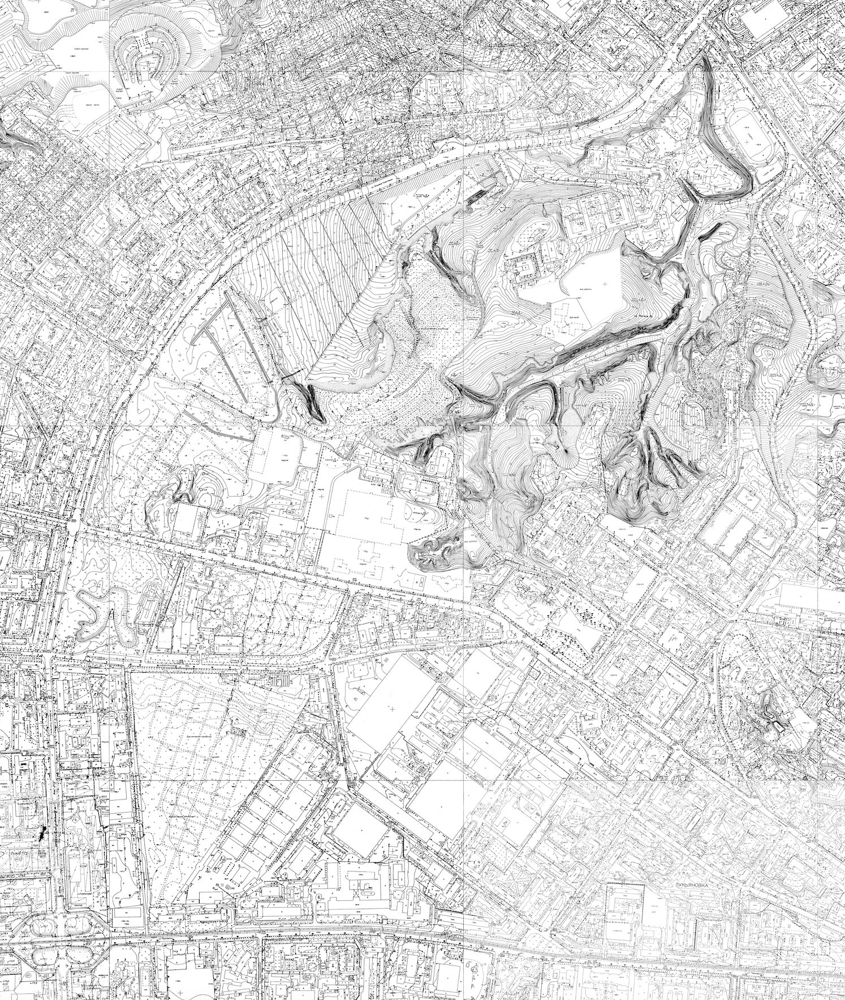
Competition Scope
The scope of the competition is the territory which historically included:
• Babyn Yar—the site of the mass murder and burials of Kyiv’s Jews and other killings during the German occupation of Kyiv;
• the surrounding area, including the historical multi-faith necropolis that had been in formation over many centuries and included Christian Orthodox, a Jewish, a Karaite, a Muslim, military as well as other cemeteries, as well as the area of the 1961 Kurenivka disaster.
Competition Objective
Today, Babyn Yar is chiefly a place for regular recreation for the residents of the surrounding districts of Kyiv. At the same time, Babyn Yar is a site of pilgrimage by Ukrainian Jews, representatives of the Jewish diaspora, and other international visitors who come to pay respect to the victims of the Holocaust. It is also a place of remembrance for all citizens of Ukraine and Kyivans, who recall the crimes of the Jewish Shoah as well as other horrors of the Nazi occupation and Soviet totalitarian rule.
Thus, the aim of the competition should be to create a clearly marked out space, in which both those who are coming with the explicit goal of honoring the memory of the dead and regular local residents or students of the nearby colleges and universities would at once feel the connection of this place to the tragic history of the Holocaust and other tragedies that had happened here.
In the humanitarian context, therefore, the competition objective is to create a space of reflection and acknowledgement of the extreme inhumanity and tragic events that occurred at this site in the past, and to unite contemporary citizens of Ukraine of all ethnic backgrounds in the spirit of mutual empathy for past sufferings, affirmation of the value of every individual human life, and aspirations for a just and humane society.
In the context of memorial architecture, the competition objective is to present to the public, governmental institutions, and the professional community ideas for creating a comprehensive memorial space as an alternative to chaotic installation of separate monuments.
In the spatial context, the competition objective is to create a modern holistic public memorial space which is integrated with the city structure through the means of landscape design.
In the educational context, the competition objective is to employ landscape design to create a space capable of conveying to visitors (including those who have no connection to this place either through personal or through familial memory) the value of remembrance, as well as ideas of humanism, tolerance, democracy, civil society, human-rights defense, and natural and spiritual ecology—in effect, life-affirming responses to the evils of the Holocaust and other tragedies that occurred on this space.
In the social context, the competition objective is to present to the public a model of quality holistic structuring and integration of an urban recreational area that is a historical-memorial site of global significance.
Competition Guidelines
• the site must remain a public space, accessible to individuals with disabilities;
• participants should comply with the current land zoning regulations of both historicalmemorial reserves and the territory of protected areas of the historical-memorial reserve “Babyn Yar” and the landmark of national significance “Kyrylivska Church”;
• all the existing objects of cultural heritage as well as memorial objects and other buildings/structures must be preserved; entries should also take into account the repurposing of buildings which will be handed over to the National Historical-memorial Reserve “Babyn Yar”;
• competition participants should provide proposals for creating a space with the possibility of development over time, where new monuments might be erected in the future;
• participants should provide proposals for the guidelines of territorial development, including parameters for possible new monuments and location(s) where they could be installed, with the view toward rational use of land and compositional unity with the surroundings;
• the existing natural landscape must be preserved to the greatest possible extent and presented in the context set forth by the competition brief;
• participants should provide proposals for the memorialization of space outside the competition site (e. g., the path which Jews took to their deaths on September 29, 1941; monuments; former Zenit stadium (currently Start stadium); former garages of a tank repair shop; part of the execution zone in Babyn Yar; the territory of the former Syrets concentration camp with its burial sites; the cemetery of German prisoners of war, former streetcar maintenance depot named after Krasin (currently, the Podil streetcar depot) as parts of a joint memorial space;
• entries should provide for methods of navigation around the competition site and the memorial space outside them in the form of information boards.
It is recommended that design projects:
• do not call for construction of new buildings and large structures; do not include new monuments of their own; minimize the use of new national, religious or political symbols; do not include fences or separated areas on the territory under design;
• provide proposals for a pedestrian walkway system on the territory;
• use economically sound solutions;
• follow the Principle of Sustainability
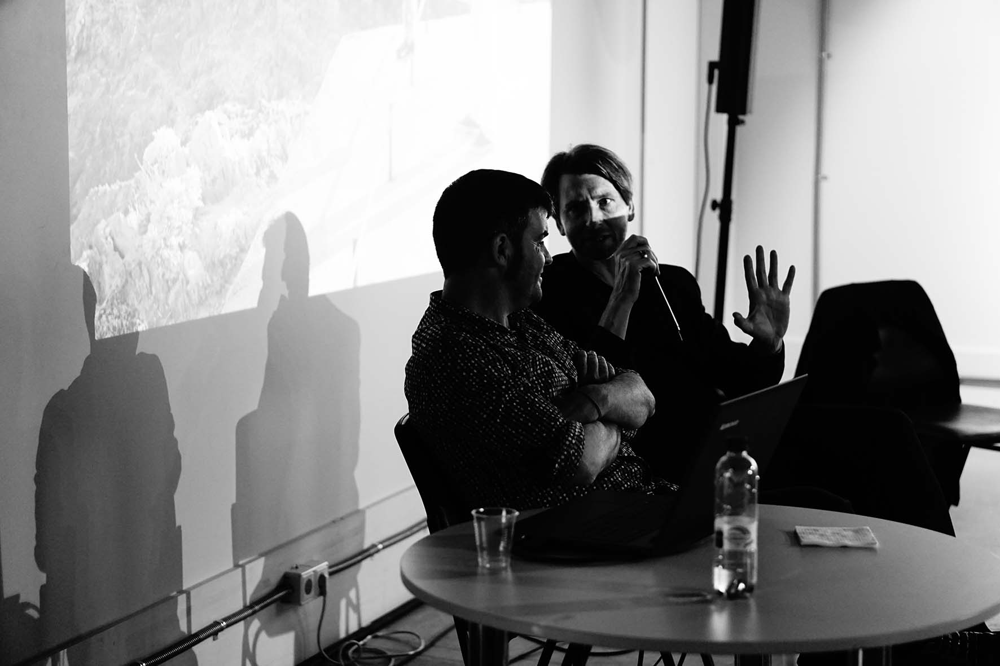
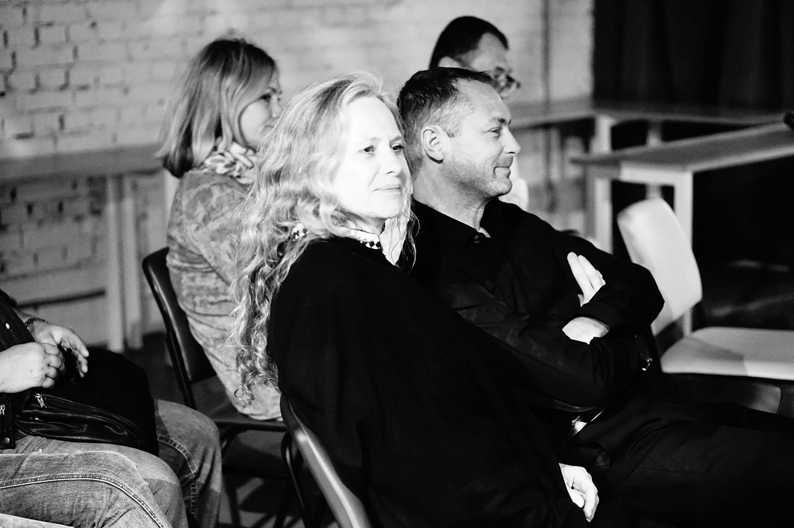
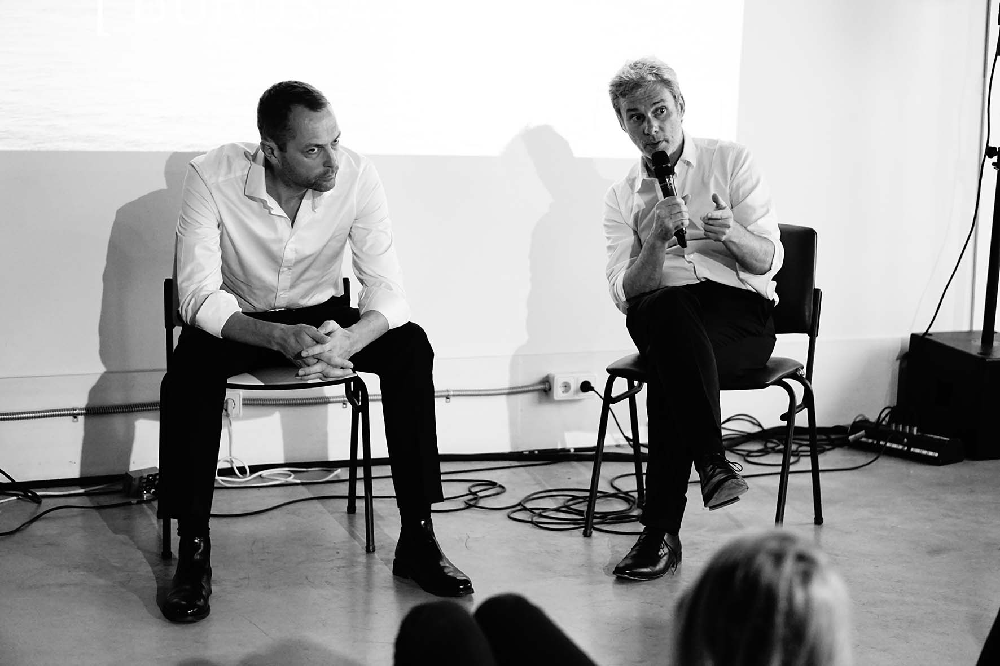
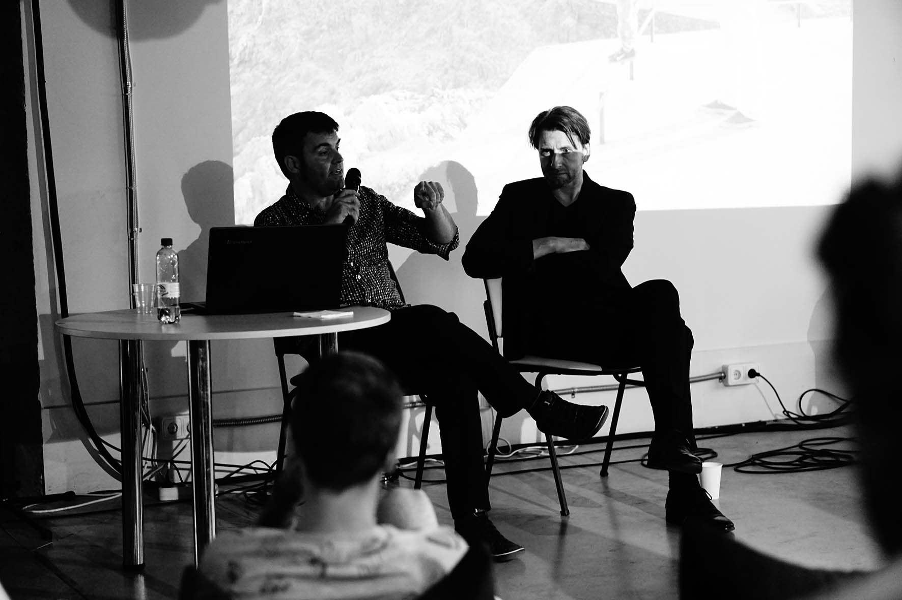
Jury Panel:
Barbara Aronson / Israel / – urban and town planner, landscape architect
Marti Franch Batllori / Spain / – landscape architect
Dr. Markus Jatsch / United Kingdom / – architect at Martha Schwartz Partners
Jimmy Norrman / Sweden / – landscape architect, architect
Jörg Michel / Germany / – landscape architect, landscape gardener
Olivier Philippe / France /, representative of UIA – landscape architect
David Bosshard / Switzerland /, UIA representative – landscape architect
Serhiy Tselovalnyk / Ukraine / – Chief Architect of Kyiv (2010–2015)
Mykhaylo Hershenzon / Ukraine / – architect
Volodymyr Pryimak / Ukraine / – architect
Dr. Vladyslav Hrynevych / Ukraine / – historian, political scientist
June 6-7, 2016
Series of lectures ‘The Intersection of Landscape, Art and Urbanism as the Foundation for Sustainable Cities’
2 events in frame of CANactions School for Urban Studies Public Program and Babyn Yar - Dorohozhychi Necropolis Open International Architectural Ideas Competition for a Holistic Structuring and Integration of a Historical and Memorial Area. Case on importance of landscape architecture in creating public spaces and higher comfort of life in the city.
Speakers:
Jörg Michel / POLA/ Berlin, Germany /
Marti Franch Batllori / EMF/ Barcelona, Spain /
Dr. Markus Jatsch / Martha Schwartz Partners/ London, UK/
Olivier Philippe / Agence TER/ Paris, France /
photo credits: Margo Didichenko
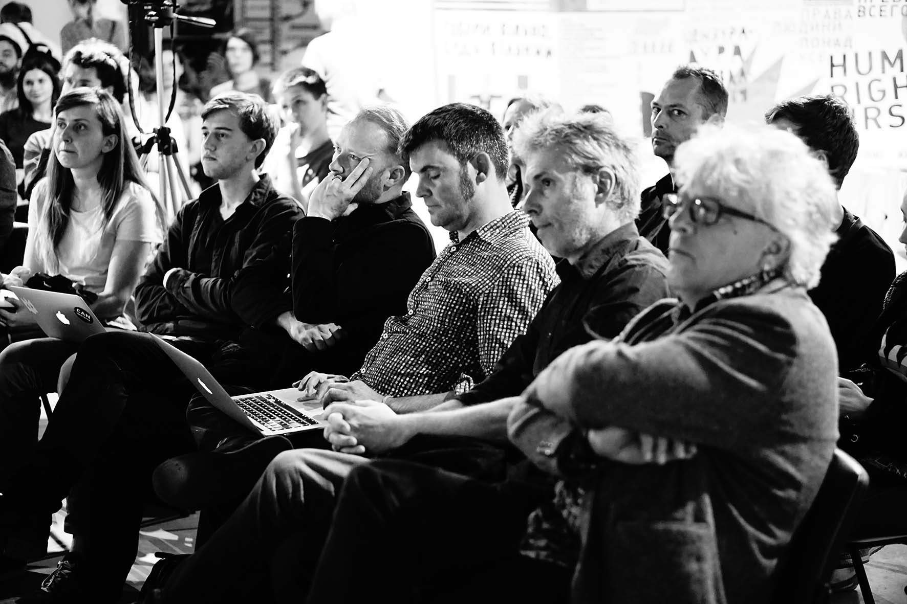
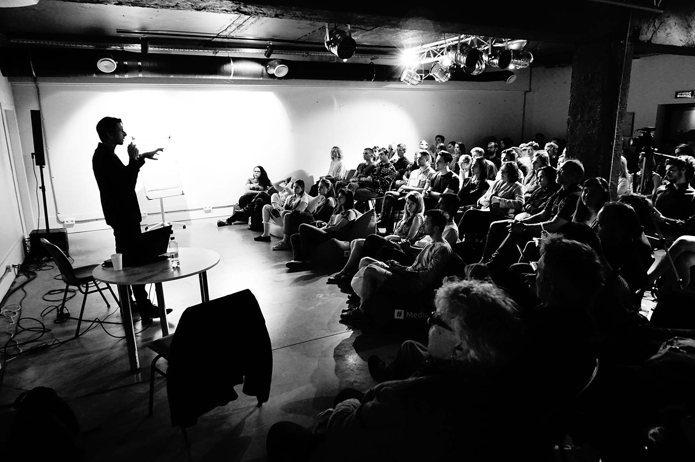
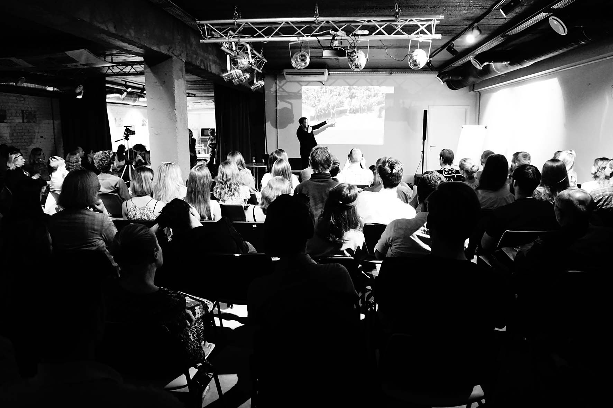
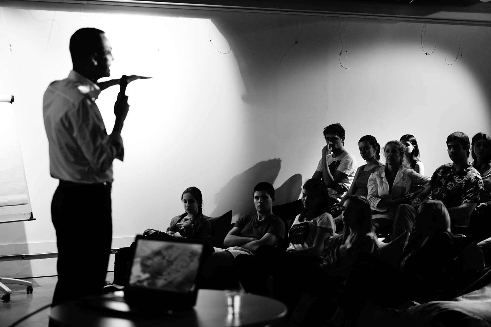
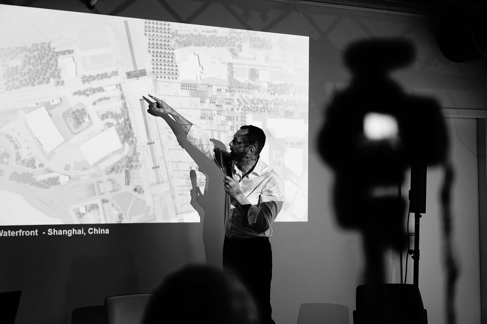
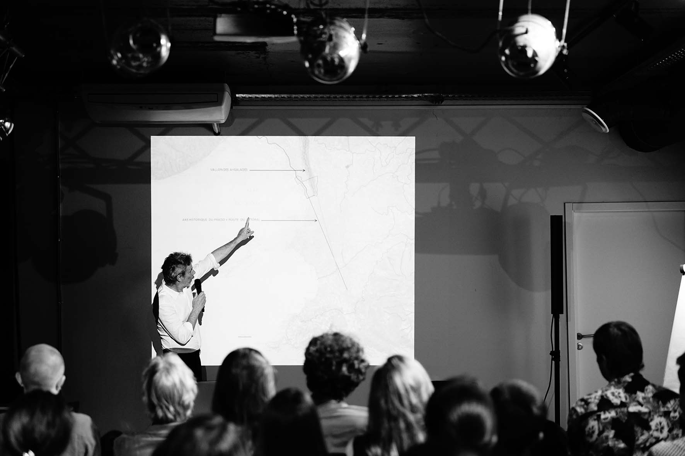
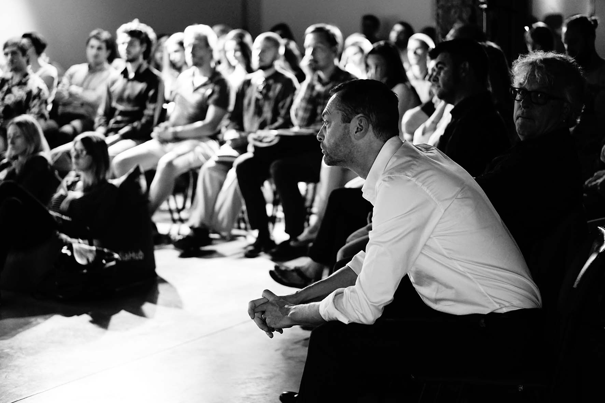
designed & built by masha vakula